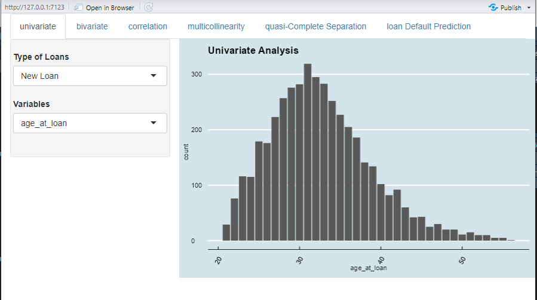
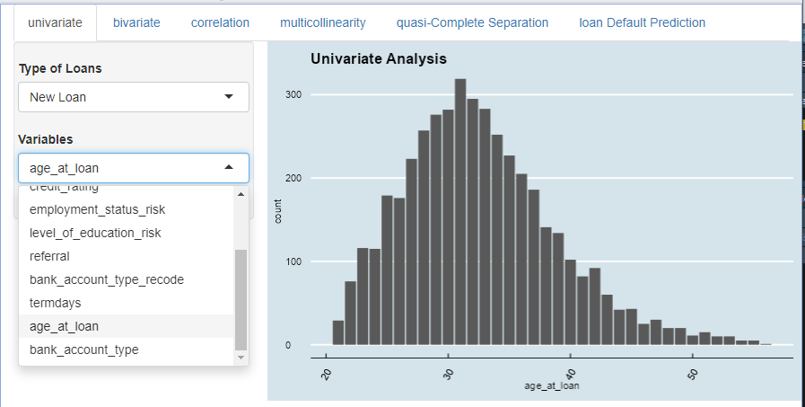
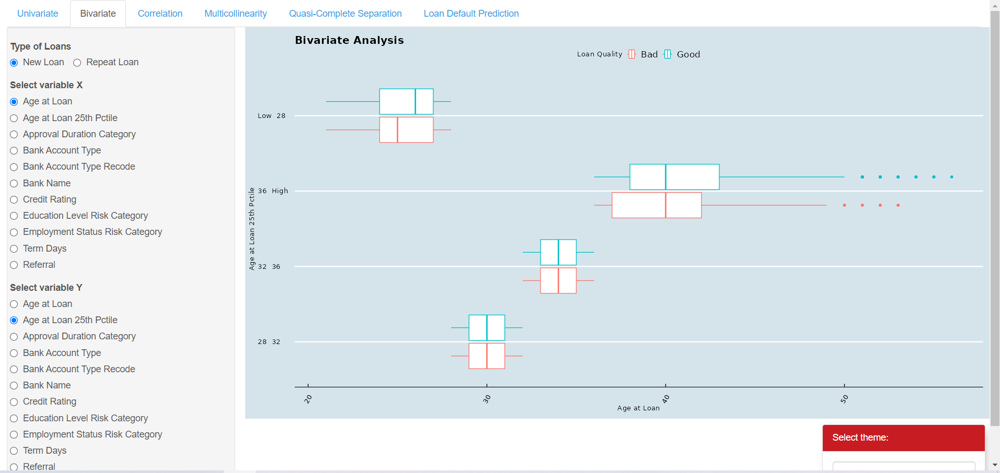
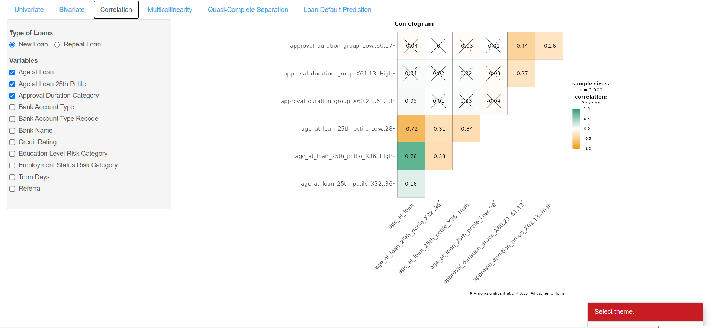
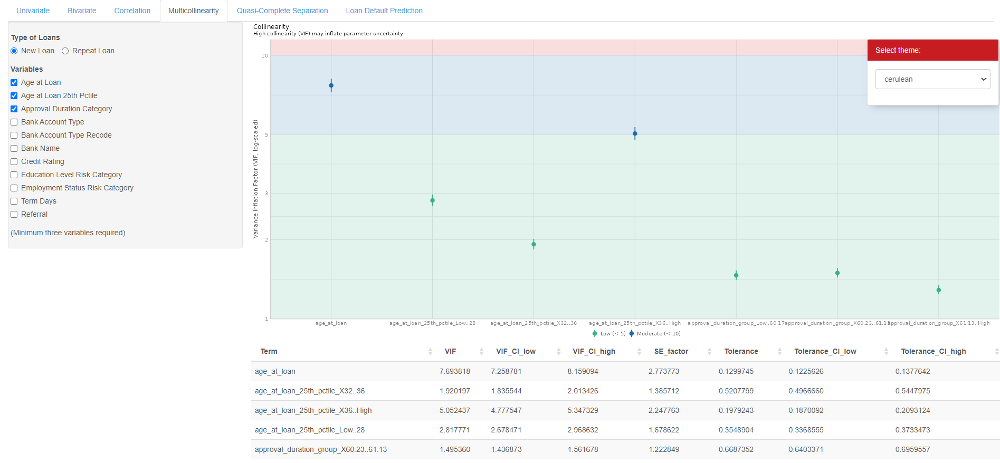
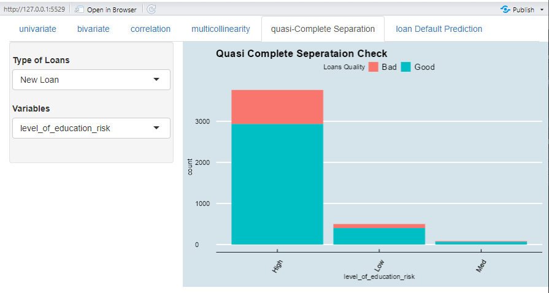

User Guide
Univariate tab
Step1: Select which datasets to be used (New Loans datasets or Repeated Loans dataset)

Step 2: Next users have to choose which variables to be analyze under Univariate Analysis

The result bar chart will show you the distributions of the loans data as per the selected variable.
Bivariate tab
Step 1: Select which datasets to be used (New Loans datasets or Repeated Loans dataset).
Step 2: Choose variables X and Y to analyze if there is any concurrent relation between two variables.
 The plot on the right could be either a box-plot, scatter plot or Mosaic plot depends on whether variables chosen are continuous or categorical variables.
Correlation tab
Step 1: Select which datasets to be used (New Loans datasets or Repeated Loans dataset).
Step 2: Choose variables that you would like to analyze their correlations in between. Take note that at least two variables have to be chosen in order to display a proper correlation pairwise plot.

A color legend would show up on the right. Green color signifies positive correlation and orange color represents negative correlation while the brightness translates the degree of correlation into visual representation.
A significance test is also performed on all correlation between pairs of variables. A cross-mark would be displayed if the two paired variables produces a non-significant result.
Multi Collinearity tab
Step 1: Select which datasets to be used (New Loans datasets or Repeated Loans dataset).
Step 2: Choose variables that you would like to conduct multicollinearity study with. Take note that at least two variables have to be chosen in order to display a proper multicollinearity study.

A VIF value equal to 1 represents that variables chosen are not correlated. For VIF values fall within 1 to 5 (green area), it means variables chosen are moderately correlated. For VIF values fall within 5 to 10 (blue area), it means variables chosen are highly correlated.
A table that comes along with multicollinearity would be produced at the bottom with values Variance Inflation Factor (VIF) as well as some of its associated statistical values like upper and lower confidence interval.
Quasi Complete Seperation tab
Step1: Select which datasets to be used (New Loans datasets or Repeated Loans dataset)

Step 2: Next users have to choose which variables to be analyze to determine whether it violates the
The result will show you whether this particular variable would violate quasi complete separation issue. If it is, you will see one column / bar complete includes the majority (or total number) of one type of loan quality.
For example in the above situation, Variable “level of education risk”, for the high level of education risk ( for borrowers with lowest education levels), the majority of bad loans concentrated under this group, hence if user include this variable in the modelling, it may lead to overfitting and unreliable coefficient estimates.